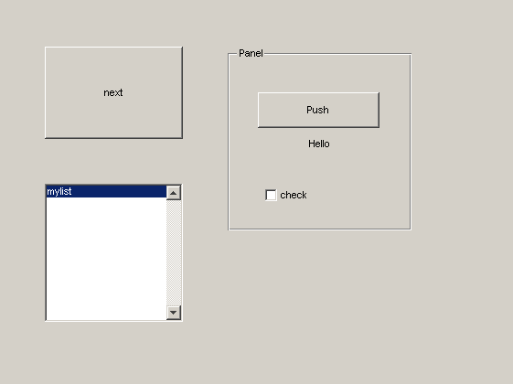
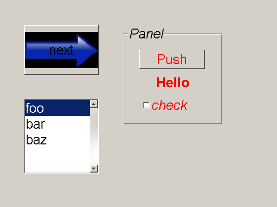

Matlab CSS (MSS) tries to bring the power of W3C's Cascading Stylesheets to Matlab GUIs.
With MSS, you have easy control over the appearance of all your GUI's through a simple CSS file.
You can access the project's files in to ways: zip archive or svn.
The primary target for MSS are GUIs designed with GUIDE. But in fact, you could use it for plain figures or even any type of handle-enabled object.
Any field of a handle-object can be set with MSS. Everywhere you would normally use set(handle,'myproperty',myvalue), you could use the MSS equivalent handle {myproperty: myvalue}.
* {FontSize: 20} #next {background: url('forward.png')} uipanel uicontrol {ForegroundColor: 1 0 0} uicontrol.text {FontWeight: bold} #mylist {String: "{'foo','bar','baz'}"} .checkbox , uipanel {FontAngle: italic} A sample GUI named 'sample.fig' is shown on the left. On the right, the GUI is styled with stylefig('sample.fig','default.css'). The file 'default.css' contains all rules from the syntax table above.
 
Dowload the project files and put them somewhere were matlab can find them: add the path with addpath('fill in the dir') and optionally save the path with savepath.
Run classpath.
To test things out, navigate to the 'sample' subdirectory and try styling the sample GUI with stylefig('sample.fig','default.css') or by running the m-file run.